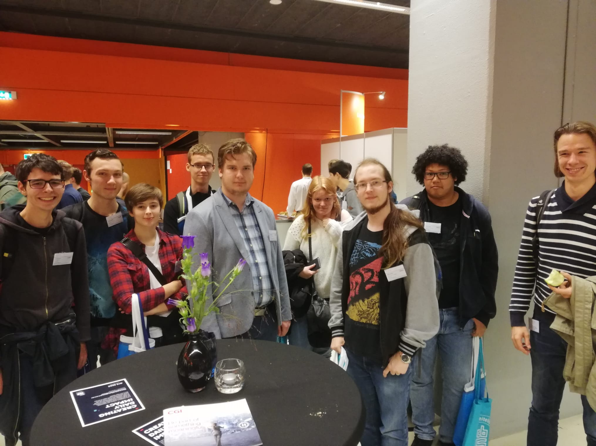

Voor de opdracht over ons beroepbsbeeld hebben we 2 dingen gedaan: naar het HBO-I event, en een dag bedrijvensafari. Over deze 2 activiteiten ga ik je hier wat meer vertellen.
Dit event vond plaats in de Jaarbeurs in Utrecht. Hier konden we bij verschillende bedrijven een kijkje nemen, omdat ze met een stand in de Jaarbeurs stonden. Hier konden we dus informatie opdoen over wat ze doen, hoe ze dat doen, en wat hun visie is. Ook heb ik wat informatie opgedaan over een aantal verschillende rollen binnen een ICT bedrijf. Een aantal van de meest voorkomende rollen zijn bijvoorbeeld:
Op dit event heb ik een aantal bedrijven bezocht. Dit zijn onder andere:
Ook heb ik een masterclass bezocht, namelijk Gamification. Hier werd uitgelegd hoe we games kunnen gebruiken om problemen op te kunnen lossen. Ook werden er een aantal voorbeelden gegeven die op dit moment al in de praktijk worden toegepast.
Een halve week later zijn we op bedrijvensafari geweest. Dit was bij 3 bedrijven in Zierikzee, namelijk: